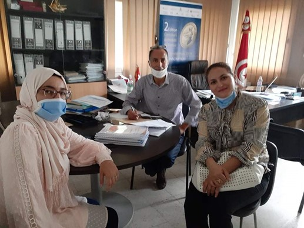

← Retour à tous les projets
Projet MEDFOOD TTHUBS
Informations Clés
Programme de Financement : PRIMA SECTION 1
Période : 2020 - 2023
Objectif du Projet
Le projet MEDFOOD TTHUBS, ou "Trace & Trust Hubs for MED food", se concentre sur le développement et la mise en œuvre de pratiques de traçabilité avancées pour améliorer la sécurité, l'authenticité et la qualité des produits alimentaires méditerranéens, renforçant ainsi la confiance des consommateurs.
Notre Rôle
L'ADEP a joué un rôle essentiel dans la dissémination des outils développés par le projet. Notre principale contribution a été l'organisation de campagnes de sensibilisation ciblées pour promouvoir et encourager l'adoption de la plateforme en ligne MED Food TTHubs par les agriculteurs, les producteurs et les autres acteurs de la chaîne de valeur alimentaire.
Galerie d'Activités
